Candidate List 20260409 Previous Day Next Day Section 1: New Sources (age<1d) Cosmological Afterglow
Section 2: Old (1-5d) sources observed last night placeholder
Section 1: New Afterglow/FBOT Cands Last Night (0)
Section 2: Older Sources Observed Last Night (23)
0. ZTF26aarbcko (Afterglow?) [Back to Top] [Share] [Trigger Swift] [Fritz ] [Lasair ]RA, Dec: 257.83628, -17.30818 17h11m20.71s, -17d-18m-29.45sGalactic (l, b): 5.50614, 12.92909 ext(g-r) = 0.322PS1: 1 source in 3 arcsec Closest: d = 1.84 arcsec photoz=1.12+/-0.06 peak abs mag = -27.63
1. ZTF26aarcbcv (FBOT?) [Back to Top] [Share] [Trigger Swift] [Fritz ] [Lasair ]RA, Dec: 145.0041, -4.6768 9h40m0.98s, -4d-40m-36.50sGalactic (l, b): 239.99234, 33.91889 ext(g-r) = 0.052LegacySurvey: 1 sources in 3 arcsec Closest: d = 2.78 arcsec, 27.1 deg (east of north) photoz=0.07 (68% bounds 0.05, 0.08), type=SER peak abs mag = -19.24 (68% bounds -18.49, -19.76)
2. ZTF26aardniy (FBOT?) [Back to Top] [Share] [Trigger Swift] [Fritz ] [Lasair ]RA, Dec: 164.34836, 13.97245 10h57m23.61s, 13d58m20.81sGalactic (l, b): 233.51335, 60.34432 ext(g-r) = 0.021peak abs mag = -19.54 LegacySurvey: 1 sources in 3 arcsec Closest: d = 0.75 arcsec, 27.5 deg (east of north) photoz=0.66 (68% bounds 0.27, 1.46), type=EXP peak abs mag = -24.25 (68% bounds -21.96, -26.38) Consistent with synchrotron, g-r>0!
3. ZTF26aarfiot (FBOT?) [Back to Top] [Share] [Trigger Swift] [Fritz ] [Lasair ]RA, Dec: 201.85471, 9.51504 13h27m25.13s, 9d30m54.13sGalactic (l, b): 330.36545, 70.44589 ext(g-r) = 0.024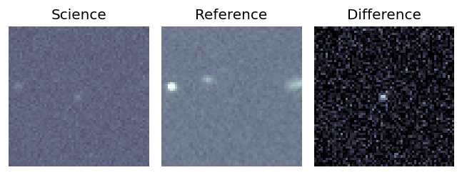
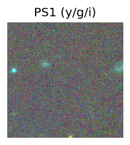
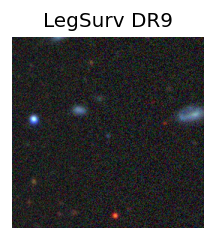
peak abs mag = -21.20 LegacySurvey: 1 sources in 3 arcsec Closest: d = 1.42 arcsec, 184.0 deg (east of north) photoz=0.98 (68% bounds 0.39, 1.5), type=REX peak abs mag = -25.21 (68% bounds -22.81, -26.36) 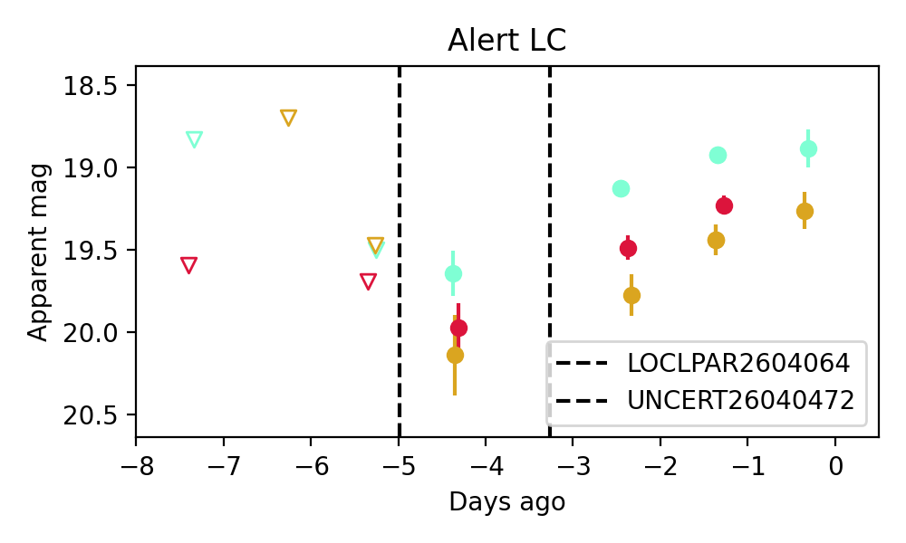
4. ZTF26aargqbv (FBOT?) [Back to Top] [Share] [Trigger Swift] [Fritz ] [Lasair ]RA, Dec: 194.18034, 35.12483 12h56m43.28s, 35d 7m29.39sGalactic (l, b): 115.21922, 81.92415 ext(g-r) = 0.014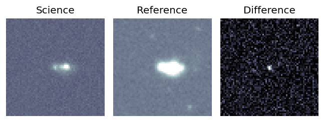
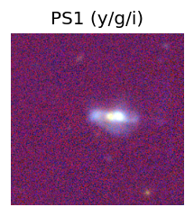
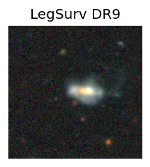
peak abs mag = -20.49 LegacySurvey: 1 sources in 3 arcsec Closest: d = 1.32 arcsec, 32.5 deg (east of north) photoz=0.02 (68% bounds 0.01, 0.04), type=PSF peak abs mag = -15.63 (68% bounds -13.98, -17.6) 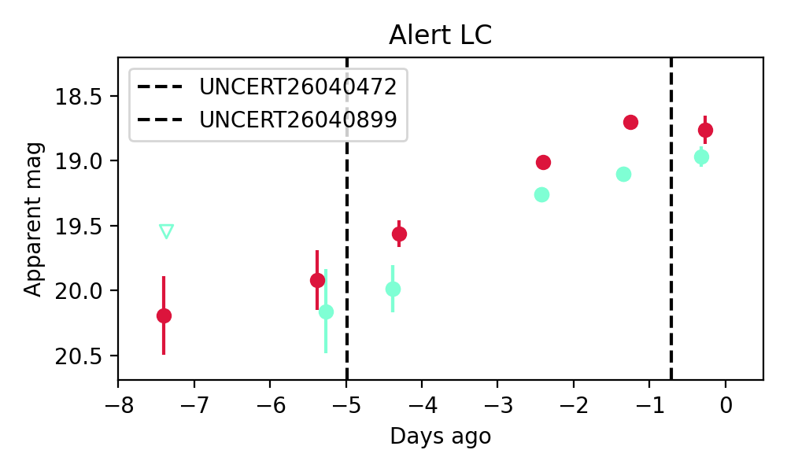
Consistent with synchrotron, g-r>0!
5. ZTF26aargtpb (Afterglow?) [Back to Top] [Share] [Trigger Swift] [Fritz ] [Lasair ]RA, Dec: 302.30804, 49.22032 20h 9m13.93s, 49d13m13.14sGalactic (l, b): 84.38917, 8.72743 ext(g-r) = 0.416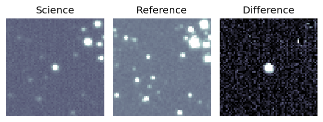
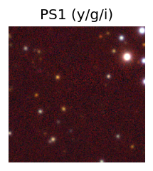
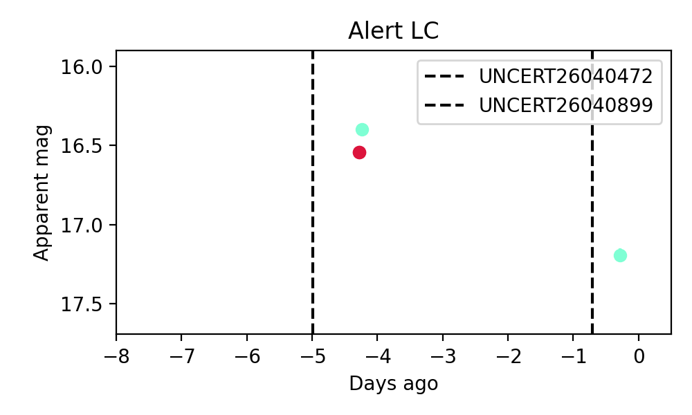
6. ZTF26aargtrn (Afterglow?) [Back to Top] [Share] [Trigger Swift] [Fritz ] [Lasair ]RA, Dec: 298.33716, 69.01263 19h53m20.92s, 69d 0m45.45sGalactic (l, b): 101.39296, 19.9176 ext(g-r) = 0.237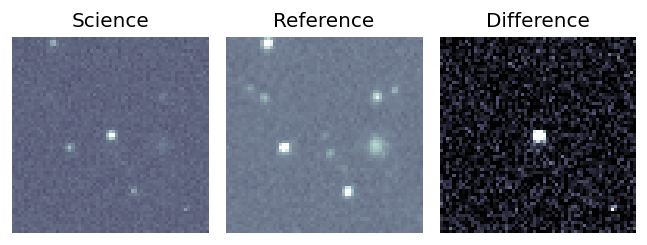
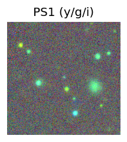
PS1: 1 source in 3 arcsec Closest: d = 0.14 arcsec photoz=0.77+/-0.29 peak abs mag = -26.37 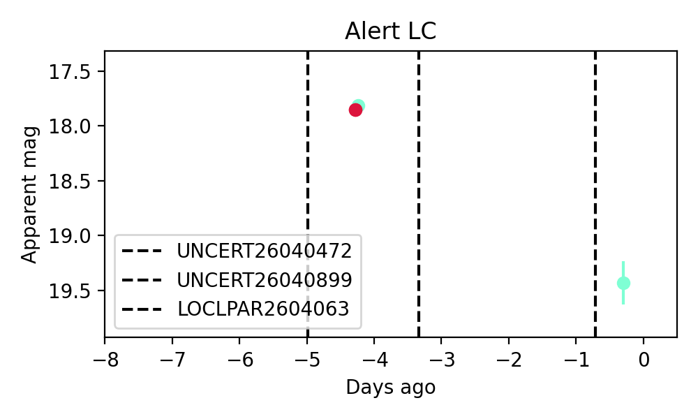
7. ZTF26aargtxa (FBOT?) [Back to Top] [Share] [Trigger Swift] [Fritz ] [Lasair ]RA, Dec: 299.37013, 50.21122 19h57m28.83s, 50d12m40.39sGalactic (l, b): 84.26632, 10.8663 ext(g-r) = 0.136PS1: 1 source in 3 arcsec Closest: d = 3.25 arcsec photoz=0.07+/-0.00 peak abs mag = -19.72 Consistent with synchrotron, g-r>0!
8. ZTF26aarjkei (FBOT?) [Back to Top] [Share] [Trigger Swift] [Fritz ] [Lasair ]RA, Dec: 148.36461, 16.03061 9h53m27.51s, 16d 1m50.19sGalactic (l, b): 218.59882, 47.39808 WARNING: 3.03 deg from ecliptic plane ext(g-r) = 0.039peak abs mag = -20.16 LegacySurvey: 1 sources in 3 arcsec Closest: d = 1.31 arcsec, 40.0 deg (east of north) photoz=0.52 (68% bounds 0.34, 1.03), type=REX peak abs mag = -22.97 (68% bounds -21.84, -24.77) Consistent with synchrotron, g-r>0!
9. ZTF26aarjkso (Afterglow?FBOT?) [Back to Top] [Share] [Trigger Swift] [Fritz ] [Lasair ]RA, Dec: 126.05861, 0.69325 8h24m14.07s, 0d41m35.71sGalactic (l, b): 223.34168, 20.85981 ext(g-r) = 0.04peak abs mag = -20.04 LegacySurvey: 1 sources in 3 arcsec Closest: d = 2.10 arcsec, 76.3 deg (east of north) photoz=0.16 (68% bounds 0.13, 0.18), type=SER peak abs mag = -20.45 (68% bounds -20.01, -20.75) Consistent with synchrotron, g-r>0!
10. ZTF26aarkxlf (Afterglow?FBOT?) [Back to Top] [Share] [Trigger Swift] [Fritz ] [Lasair ]RA, Dec: 139.65802, 14.78829 9h18m37.93s, 14d47m17.84sGalactic (l, b): 215.66214, 39.18571 WARNING: -0.85 deg from ecliptic plane ext(g-r) = 0.033peak abs mag = -19.54 LegacySurvey: 1 sources in 3 arcsec Closest: d = 1.76 arcsec, 318.5 deg (east of north) photoz=0.13 (68% bounds 0.13, 0.14), type=SER peak abs mag = -19.45 (68% bounds -19.31, -19.56) Consistent with synchrotron, g-r>0!
11. ZTF26aarlmyq (FBOT?) [Back to Top] [Share] [Trigger Swift] [Fritz ] [Lasair ]RA, Dec: 167.69895, -2.45017 11h10m47.75s, -2d-27m-0.61sGalactic (l, b): 259.60897, 51.74993 ext(g-r) = 0.049peak abs mag = -22.21 LegacySurvey: 1 sources in 3 arcsec Closest: d = 1.17 arcsec, 138.8 deg (east of north) photoz=0.59 (68% bounds 0.34, 0.86), type=REX peak abs mag = -23.05 (68% bounds -21.64, -24.04) Consistent with synchrotron, g-r>0!
12. ZTF26aarlnvb (FBOT?) [Back to Top] [Share] [Trigger Swift] [Fritz ] [Lasair ]RA, Dec: 173.06384, 26.57332 11h32m15.32s, 26d34m23.97sGalactic (l, b): 210.20738, 72.3481 ext(g-r) = 0.021peak abs mag = -19.79 LegacySurvey: 1 sources in 3 arcsec Closest: d = 0.65 arcsec, 333.8 deg (east of north) photoz=0.03 (68% bounds 0.01, 0.08), type=EXP peak abs mag = -15.75 (68% bounds -13.71, -18.3) Consistent with synchrotron, g-r>0!
13. ZTF26aarlziu (FBOT?) [Back to Top] [Share] [Trigger Swift] [Fritz ] [Lasair ]RA, Dec: 211.24458, 8.71507 14h 4m58.70s, 8d42m54.26sGalactic (l, b): 349.72226, 64.67569 ext(g-r) = 0.027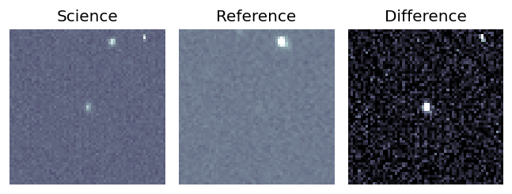
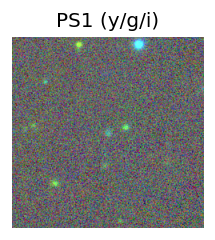
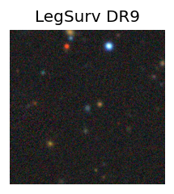
peak abs mag = -22.82 LegacySurvey: 1 sources in 3 arcsec Closest: d = 0.66 arcsec, 186.9 deg (east of north) photoz=0.16 (68% bounds 0.11, 0.21), type=EXP peak abs mag = -20.24 (68% bounds -19.43, -20.97) 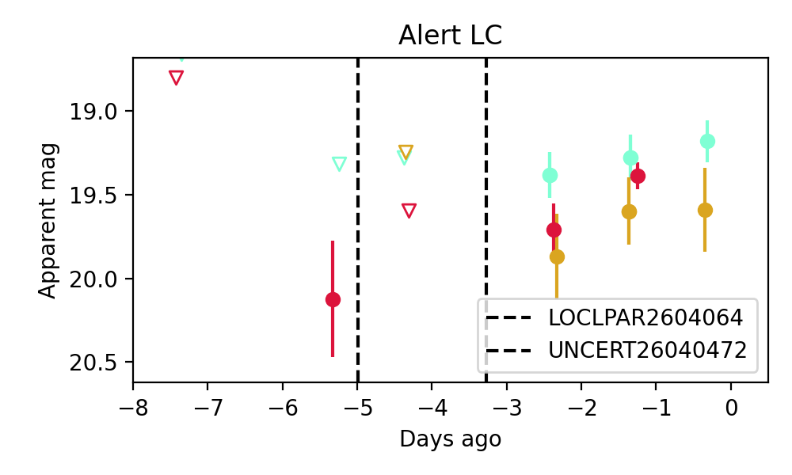
14. ZTF26aarxcfv (FBOT?) [Back to Top] [Share] [Trigger Swift] [Fritz ] [Lasair ]RA, Dec: 75.98898, 13.54285 5h 3m57.35s, 13d32m34.26sGalactic (l, b): 187.69475, -16.51637 ext(g-r) = 0.434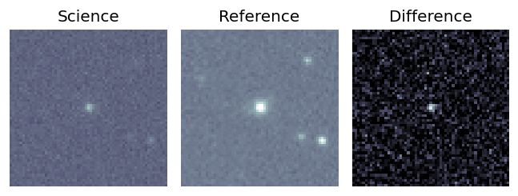
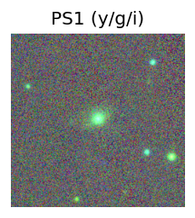
peak abs mag = -21.18 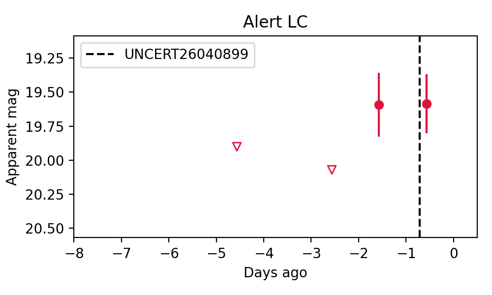
15. ZTF26aarxhsb (FBOT?) [Back to Top] [Share] [Trigger Swift] [Fritz ] [Lasair ]RA, Dec: 117.78659, 29.24541 7h51m8.78s, 29d14m43.47sGalactic (l, b): 191.41914, 25.01162 ext(g-r) = 0.046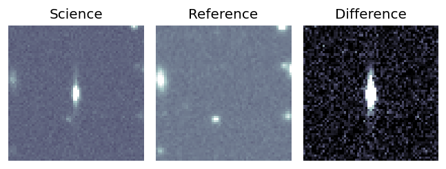
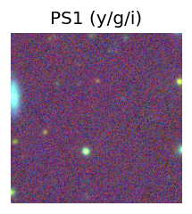
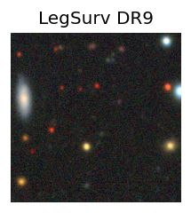
LegacySurvey: 1 sources in 3 arcsec Closest: d = 1.09 arcsec, 87.0 deg (east of north) photoz=0.64 (68% bounds 0.48, 0.91), type=PSF peak abs mag = -27.1 (68% bounds -26.34, -28.05) 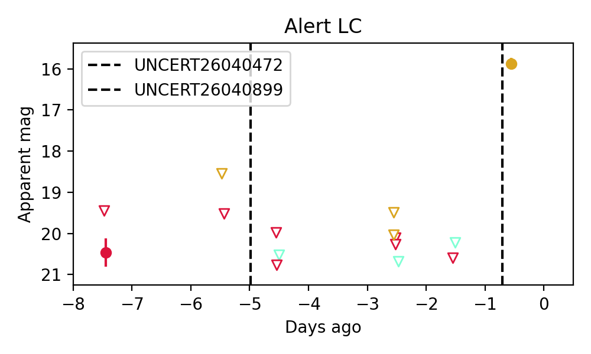
16. ZTF26aarywzl (Afterglow?) [Back to Top] [Share] [Trigger Swift] [Fritz ] [Lasair ]RA, Dec: 105.80893, 82.14974 7h 3m14.14s, 82d 8m59.08sGalactic (l, b): 131.75826, 27.25589 ext(g-r) = 0.056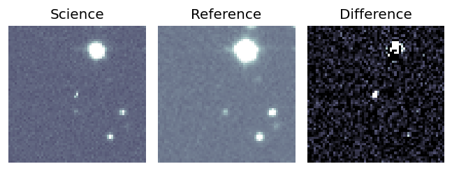
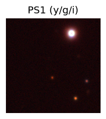
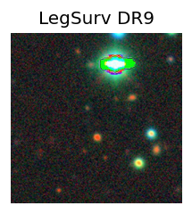
LegacySurvey: 1 sources in 3 arcsec Closest: d = 4.18 arcsec, 114.1 deg (east of north) photoz=0.79 (68% bounds 0.38, 1.15), type=PSF peak abs mag = -24.31 (68% bounds -22.41, -25.31) 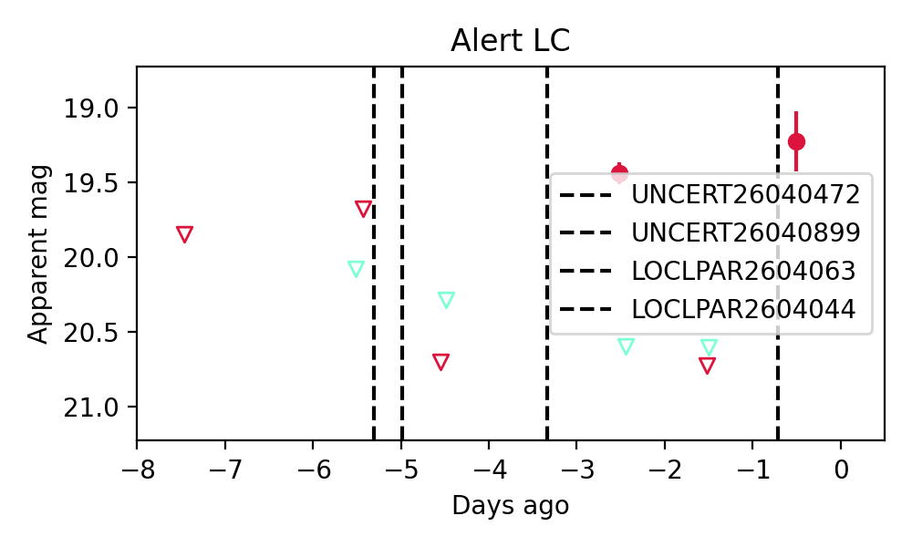
17. ZTF26aasadgb (Afterglow?) [Back to Top] [Share] [Trigger Swift] [Fritz ] [Lasair ]RA, Dec: 173.25662, 57.99796 11h33m1.59s, 57d59m52.66sGalactic (l, b): 141.57203, 56.20158 ext(g-r) = 0.015peak abs mag = -18.22 LegacySurvey: 1 sources in 3 arcsec Closest: d = 0.89 arcsec, 240.7 deg (east of north) photoz=0.08 (68% bounds 0.07, 0.09), type=SER peak abs mag = -18.31 (68% bounds -18.02, -18.64)
18. ZTF26aasafjr (FBOT?) [Back to Top] [Share] [Trigger Swift] [Fritz ] [Lasair ]RA, Dec: 171.54487, 42.25485 11h26m10.77s, 42d15m17.46sGalactic (l, b): 166.3786, 66.96898 ext(g-r) = 0.024peak abs mag = -20.57 LegacySurvey: 1 sources in 3 arcsec Closest: d = 2.08 arcsec, 219.6 deg (east of north) photoz=0.22 (68% bounds 0.19, 0.26), type=REX peak abs mag = -20.05 (68% bounds -19.68, -20.42)
19. ZTF26aasagto (FBOT?) [Back to Top] [Share] [Trigger Swift] [Fritz ] [Lasair ]RA, Dec: 170.34552, 21.17086 11h21m22.92s, 21d10m15.11sGalactic (l, b): 224.23708, 68.64593 ext(g-r) = 0.026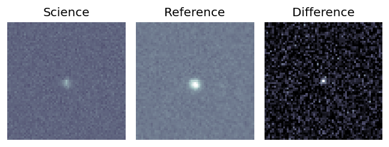
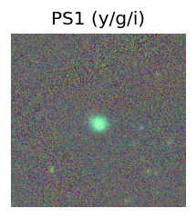
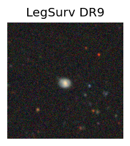
peak abs mag = -19.34 LegacySurvey: 1 sources in 3 arcsec Closest: d = 1.72 arcsec, 178.9 deg (east of north) photoz=0.2 (68% bounds 0.18, 0.21), type=SER peak abs mag = -19.56 (68% bounds -19.38, -19.74) 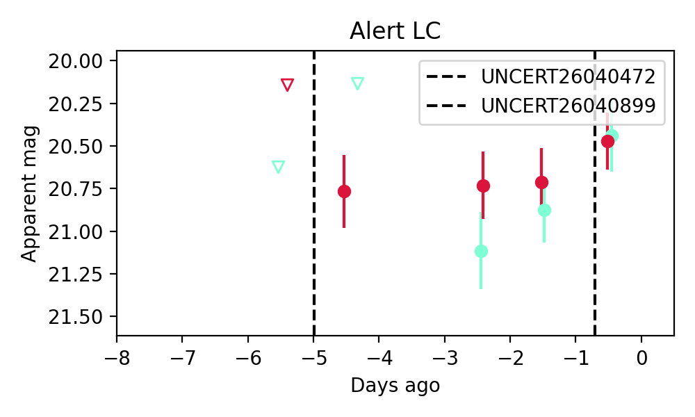
Consistent with synchrotron, g-r>0!
20. ZTF26aasaxio (Afterglow?) [Back to Top] [Share] [Trigger Swift] [Fritz ] [Lasair ]RA, Dec: 171.82003, 9.21559 11h27m16.81s, 9d12m56.11sGalactic (l, b): 251.00124, 63.24757 ext(g-r) = 0.035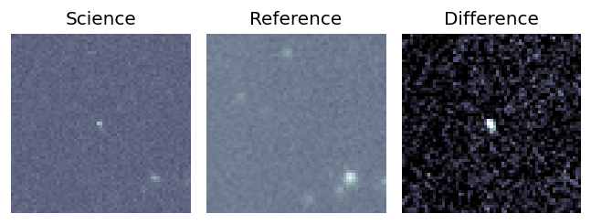
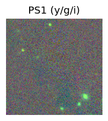
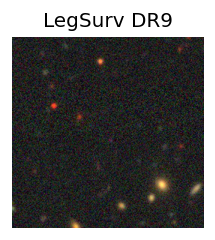
LegacySurvey: 1 sources in 3 arcsec Closest: d = 3.21 arcsec, 197.4 deg (east of north) photoz=1.04 (68% bounds 0.92, 1.19), type=REX peak abs mag = -25.21 (68% bounds -24.89, -25.57) 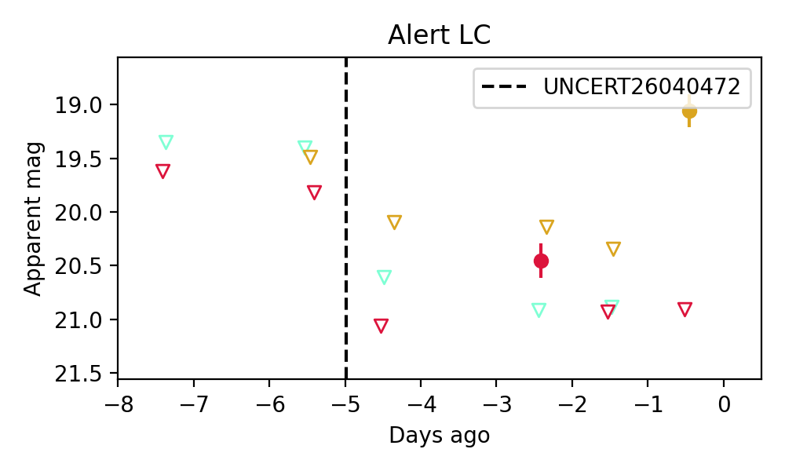
21. ZTF26aasbzem (FBOT?) [Back to Top] [Share] [Trigger Swift] [Fritz ] [Lasair ]RA, Dec: 196.46819, 54.92874 13h 5m52.37s, 54d55m43.46sGalactic (l, b): 118.50274, 62.0752 ext(g-r) = 0.02peak abs mag = -22.70 LegacySurvey: 1 sources in 3 arcsec Closest: d = 0.51 arcsec, 270.3 deg (east of north) photoz=0.32 (68% bounds 0.22, 0.5), type=REX peak abs mag = -21.49 (68% bounds -20.57, -22.66) Consistent with synchrotron, g-r>0!
22. ZTF26aasckap (Afterglow?) [Back to Top] [Share] [Trigger Swift] [Fritz ] [Lasair ]RA, Dec: 268.62929, 12.1774 17h54m31.03s, 12d10m38.65sGalactic (l, b): 37.64798, 18.06149 ext(g-r) = 0.158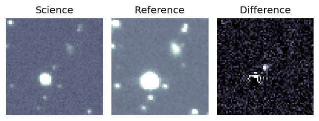
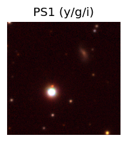
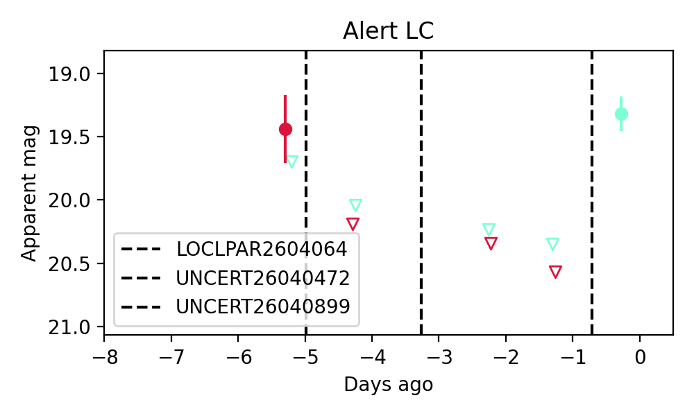